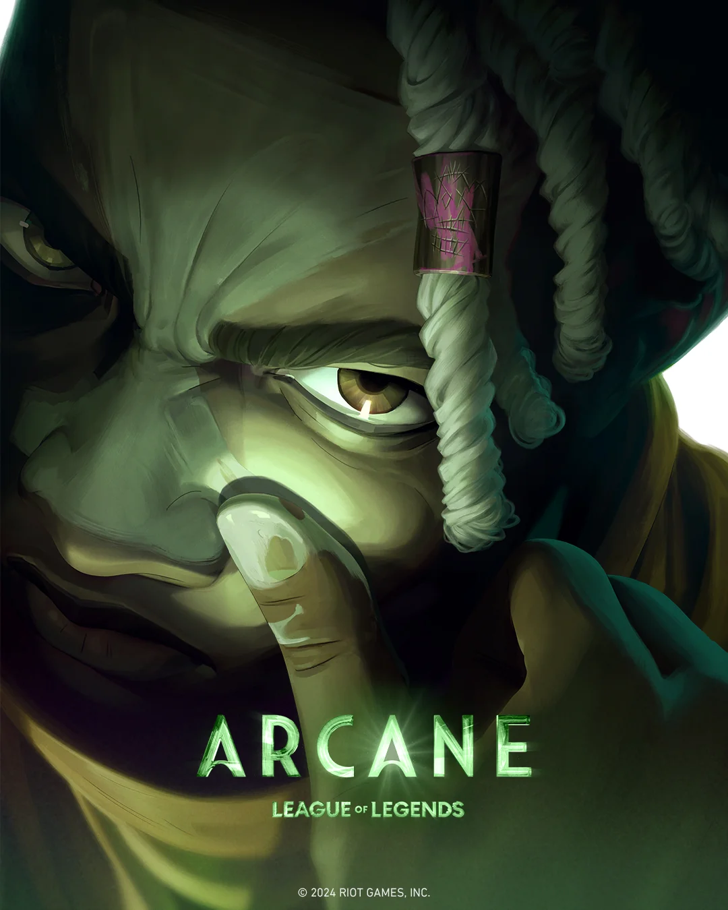

Historia
League of Legends (LoL) es un juego multijugador de arena de batalla en línea (MOBA) desarrollado por Riot Games. Fue lanzado en 2009 y está ambientado en el universo de Runaterra, un mundo lleno de magia, conflictos y personajes únicos.
Roles
En League of Legends, los jugadores pueden elegir entre cinco roles principales, en los que tendran que elegir uno de los más de 150 campeones:
- Top: Línea superior con tanques y luchadores.
- Jungla: Soporte entre líneas.
- Mid: Magos y asesinos en la línea central.
- Adc: Dañadores físicos en línea inferior.
- Soporte: Protección para el equipo.
Monstruos de la Jungla
- Barón Nashor:Barón Nashor es el monstruo neutral mas poderoso del mapa, matar al Baron da el buffo Mano del Barón. Durante 3 minutos da al jugador AD y AP y ademas mejora a los subditos
- Dragones: Son monstruos que dan buffos a todo el equipo dependiendo del tipo que sea el dragon.
- Escurridizo: Un cangrejo modificado que da vision y velocidad en un area concreta.
- Azul y Rojo: Monstruos que dan un buffo dependiendo de si matas al azul(da regeneracion de maná) o al rojo (regeneracion de vida, slow y daño verdadero).
Arcane
Arcane cuenta la historia del origen de dos campeonas de League of Legends, que casualmente son hermanas . Jinx, también conocida como Powder, y Vi se encuentran en bandos rivales de una guerra en ciernes entre la ciudad de Piltover y su oprimida zona marginal, Zaun.